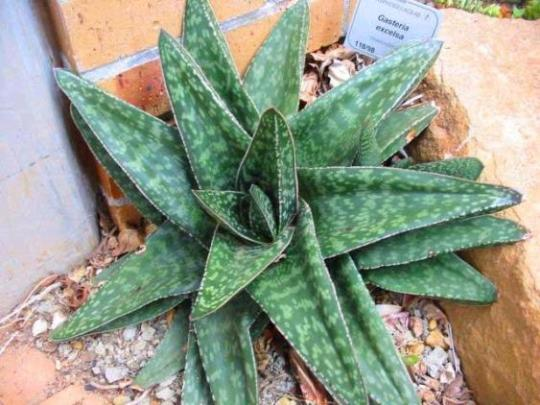
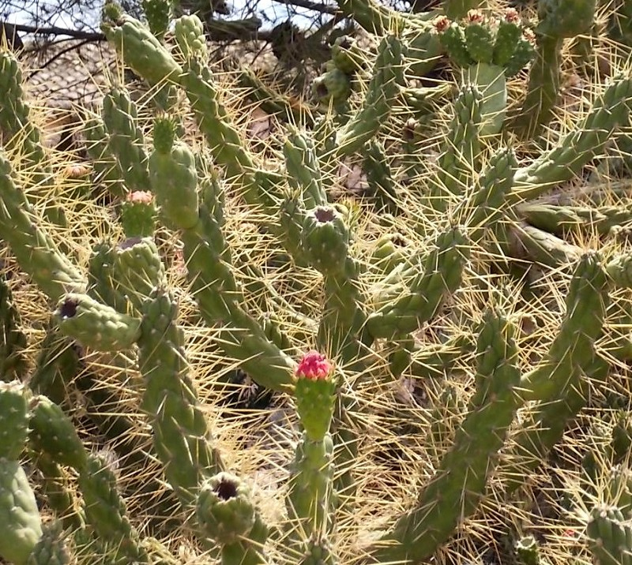
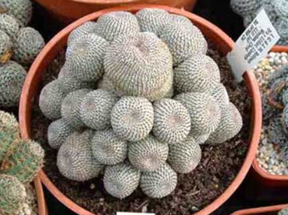
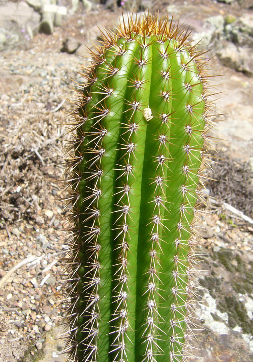
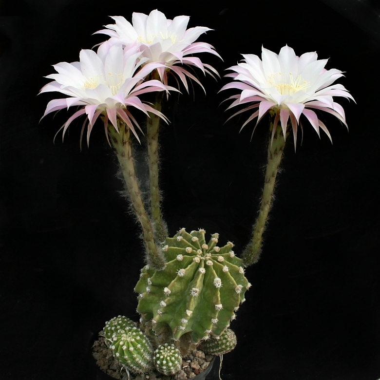
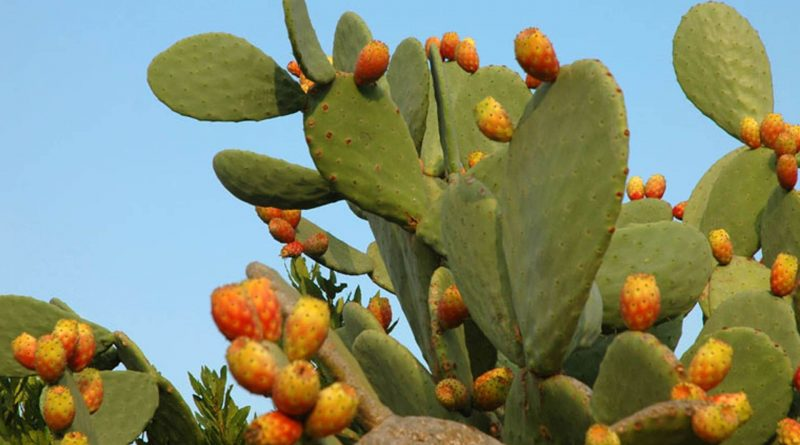
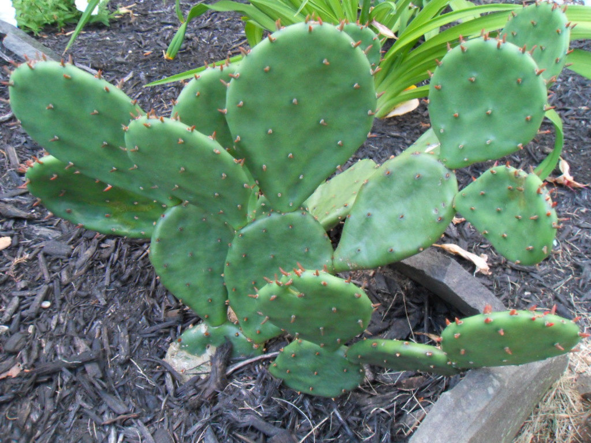

Captus cuidados dia bonito
¿Cuál es tu captus favorito?
BIENVENIDO
ven y conoce nuestros captus
Lo último de nuestro blog

Los captus necesitan cariño

Cuidalos son parte del planeta
Para muchos de nosotros los captus no son simples captus, son miembros del cbtis 222.
Agave

-Nombre científico: Agave
-Nombre común: Pita, maguey, cabuya, fique o mezcal.
-Origen: Originaria de América y la mayor concentración de especies nativas en México.
-Familia: Agavaceae
-Número de especies en México: Aproximadamente 160
-Flor o fruto: Monocárpicas
-Peligro de extinción: Se encuentra en peligro de extinción en Hidalgo por la sobreexplotación
ALOE MACULATA

-Nombre científico: Aloe Maculata.
-Nombre Común: Aloe Saponaria.
-Origen: Endémica de Sudáfrica, aunque como planta ornamental se cultiva en muchos países.
-Familia: Aloes.
-Número de especies en México: Desconocido.
-Flor o fruto: Flores de color anaranjado.
-Peligro de extinción: Nulo
AUSTROCYLINDROPUNTIA SUBULATA

-Nombre científico: Austrocylindropuntia subulata
-Nombre común: Alfileres de Eva
-Origen: Es nativa de Sudamérica, principalmente en Perú y Ecuador.
-Familia: Cactáceae
-Número de especies en México: 12 especies
-Flor o fruto: Flores de color magenta
-Peligro de extinción: No se encuentra en riesgo
AYLOSTERA SPP

-Nombre científico: Aylostera spp
-Nombre común: Alylostera
-Familia: Cactaceae
-Origen : México
-Flor o fruto: Las flores con los segmentos externos rosados y los internos blancos
-Peligro de extinción: No se encuentran en riesgo
CLEISTOCACTUS TUPIZENSIS

-Nombre científico: Cleistocactus tupizensis
-Nombre común: Antorcha plateada
-Origen: América de Sur, Bolivia
-Familia: Cactáceae
-Número de especies en México: Aproximadamente 400 especies
-Flor o fruto: Flores de color rojo
-Peligro de extinción: No se encuentra en riesgo
ECHINOPSIS EYRIESII

-Nombre científico: Echinopsis eyriesii
-Nombre común: Ombligo de la reina o reina del bosque
-Origen: Sur de América, Argentina y Brasil
-Familia: Cactaceae
-Número de especies en México: Aproximadamente 200 ejemplares
-Flor o fruta: Esta planta genera un tallo de considerable dimensión, que culmina en un bulbo que explota cada atardecer, generando una de las Flores más bellas e increíbles que se conozca en el mundo de las cactáceas
-Peligro de extinción: No se encuentra en riesgo
FEROCACTUS PENINSULAE

-Nombre científico: Ferocactus peninsulae
-Nombre común: Biznaga
-Familia: Cactaceae
-Origen: Baja California (México)
-Flor o fruto: Flores de color amarillo oro, con una franja central en los pétalos de color rojo
-Peligro de extinción: Peligro menor
GYMNOCALYCIUM LEEANUM

-Nombre científico: Gymnocalycium leeanum
-Nombre común: Sienta suegras
-Familia: Cactaceae
-Origen: Uruguay y del noreste de Argentina
-Flor o fruto: Flores de color amarillo
-Peligro de extinción: Peligro menor
OPUNTIA FICUS-INDICA

-Nombre científico: Opuntia ficus-indica
-Nombre común: Nopal
-Origen: Continente Americano, desde Canadá hasta el estrecho de Magallanes
-Familia: Cactáceae
-Número de especies en México: En aumento por su comercialización
-Flor o fruto: Tunas y flores de diversos colores
-Peligro de extinción: No se encuentra en peligro
OPUNTIA HUMIFUSA

-Nombre científico: Opuntia humifusa
-Nombre común: Lengua del diablo, higo chumbo oriental o higo indio
-Origen: América del Norte
-Familia: Cactaceae
-Número de especies en México: No se tiene el dato
-Flor o fruto: Las flores son cerosas y en ocasiones tienen centros rojos, Las frutas rojas jugosas y comestibles, a medida que la fruta madura, cambia de color de verde a rojo
-Peligro de extinción: Especie vulnerable o con un gran potencial de amenaza
PACHYCEREUS MARGINATUS

-Nombre común: Cactus órgano o Chilayo
-Nombre científico: Pachycereus marginato
-Origen: México y Estados Unidos
-Familia: Cactácea
-N° de especies en México: nulo
-Flor o fruto: Producen flores rojas en la parte superior de los tallos
-Peligro de extinción: no se encuentra en riesgo
STENOCEREUS GRISEUS

-Nombre científico: Stenocereus griseus
-Nombre común: Pitayo de Mayo
-Familia: Cactaceae
-Origen : Venezuela Nororiental y México
-Flor o fruto: Las flores con los segmentos externos rosados y los internos blancos
-Peligro de extinción: Peligro menor